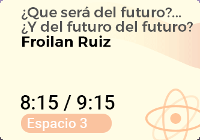
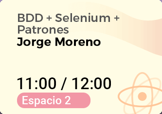

UN EVENTO ANUAL HECHO POR LOS DESARROLLADORES Y PARA LOS DESARROLLADORES DE CEIBA,
UN VIAJE PENSADO PARA TÍ.
¿Cuándo y dónde?
Día: 3 de agosto / 2018
Lugar: Parque Explora
¿Cómo llegar?Expositores
Alvaro Javier Perez Salcedo
Introducción a Kotlin: Una nueva forma de programar aplicaciones Android sin Dolores de Java- ¿Qué es Kotlin?
- Parámetros de funciones denominadas y opcionales
- Seguridad Nula
- Variables mutables e inmutables
- Lambdas
- Funciones de extensión
- Kotlin/Native
- Comparación con el lenguaje de programación Java
- Algunos problemas de Java tratados en Kotlin
- Lo que Java tiene que Kotlin no tiene
- Lo que Kotlin tiene que Java no tiene
- Conclusiones
Froilan Mauricio Ruiz
¿Que será del futuro?... ¿Y del futuro del futuro?¿Eres consciente que tal vez la primera persona capaz de vivir 1000 años ya nació? ¿Te gustaría reemplazarte un órgano enfermo por uno artificial?
Esta sesión te permitirá conocer una visión de futuro, acerca de cómo las tendencias y realidades tecnológicas, afectarán el comportamiento humano, generando una transformación mayor a corto plazo que la ocurrida en los últimos 5000 años.
Exploraremos ideas de futuro basadas en el libro "Pasaje al futuro" de Santiago Bilinkis, el cual, reúne una serie de experimentos tecnológicos que cambiarán nuestra vida.
Jorge Moreno
BDD + Selenium + PatronesRevisaremos una vez más el tema de las pruebas funcionales, pero esta vez utilizando la notación Gerking. Ventajas, herramientas y patrones más recomendados.
Jose Alfredo Fernandez y Ricardo Dominguez de Renting
Transformación Tecnológica RentingCOM - Microservicios con Azure Service Fabric- Acerca de Renting
- Arquitectura de microservicios con Service Fabric
- Esquemas de comunicación asíncrona con colas y Service Bus
Alejandro Sotelo
Procesamiento de datos con Apache Spark- ¿Qué es Apache Spark?
- Un poco de historiak
- Características principales
- El ecosistema de Apache Spark (componentes)
- Ejemplos de procesamiento con Apache Spark
- Caso de Estudio: Dashboard Prácticas técnicas
- Trabajo Futuro
Elizabeth Berrio
Inteligencia artificial, ¿y eso con que se come?Desde hace muchos años hemos estado escuchando hablar de inteligencia artificial y en los últimos años aún más. Cuando escuchamos ese par de palabras pensamos en robots que se confunden con los humanos, gracias a las películas de ciencia ficción. Pero en nuestra realidad ¿Qué es Inteligencia Artificial? ¿Cuáles son las tendencias? ¿Qué tan cerca estamos de la ciencia ficción? ¿Las máquinas se confundirán con humanos?.

Ana Franco
Anticipos una prueba de concepto hecha en BlockchainÚltimamente hemos escuchado hablar mucho de Blockchain y de las criptomonedas, pero ¿cómo podemos usar la Blockchain para construir aplicaciones?, en esta charla se muestra una implementación realizada con esta tecnología y se explican los conceptos detras de la misma.

Yuliana Cañas Cifuentes
ntegración Continua, Entrega Continua, Despliegue Continuo. Más que un proceso que cumplir en Ceiba.Conozcamos la Integración Continua, Entrega Continua y Despliegue Continuo cómo algo más que aquel proceso que hacemos que funcione día día, o aquellas herramientas que muestran SUCCESS o FAILED sobre nuestros proyectos. *¿Desde cuando se habla de Integración Continua, Entrega Continua y Despliegue Continuo?
- ¿Qué se obtiene?
- Mejorar la Calidad
- Cultura
- Buenas Prácticas
- Desarrollo Continuo
- Integracion Continua
- Entrega Continua
- Despliegue Continuo
- Veamos estos procesos continuos en Acción...
Juan Esteban Castaño
Arquitectura hexagonal, una forma sencilla de favorecer alta cohesión y bajo acoplamiento- ¿Qué beneficios tiene y porque debería estar contemplandola para mi proyecto?
- ¿Qué diferencias tiene con la arquitectura de capas tradicional?
- ¿Qué relación tiene con Domain driven Design (DDD)?
- ¿Qué relación tiene con Microservicios?
- ¿Qué relación tiene con Test driven development (TDD)?
Además veremos ejemplos reales de implementación
Roger Stivens Pérez
Dockerizando un Legado- Introducción al concepto de contenedores
- Conceptos básicos de docker
- ¿Cómo crear una imagen de docker para una aplicación? (Ejemplo práctico dockerizando una app java con springboot)
- Breve introducción a los orquestadores de contenedores
- Consideraciones a tener en cuenta al migrar una aplicación legacy

Daniela Arango Chica y Yuliana Cañas Cifuentes
Event Storming. Una alternativa a Visual Story MappingUn enfoque rápido, divertido e interactivo para el descubrimiento y diseño de procesos comerciales que produce modelos de alta calidad.
- ¿Qué es EventStorming
- Cualidades de EventStorming
- ¿Qué obtenemos de EventStorming?
- ¿Porqué EventStorming?
- ¿A quiénes necesitamos?
- ¿Qué necesitamos?
- ¿Cómo funciona?
- Hagamos un EventStorming...
Jorge Moreno
¿Después de dev-ops qué?La mejora continua de los procesos de desarrollo y operaciones, también nos debe llevar a la integración y posible automatización de las actividades del negocio en un ciclo completo con Desarrollo y operaciones. Incluso, involucrar al equipo a las personas de negocio nos va a permitir que los stakeholders puedan mantener un mejor control de su negocio y reaccionar mas rápidamente.

Guillermo Diaz
Tecnologías móviles - Un abanico de posibilidadesCon el iPhone de 1era generación y el G1 de HTC presentados en el 2007 y 2008 respectivamente, se vieron las primeras versiones comerciales de iOS y Android. Son 10 años trayendo al mundo nuevas posibilidades de innovar, y gracias a esto, continuamente diferentes competidores de tecnología quieren hacer parte de esta innovación con diferentes frameworks y/o tecnologías que nos ayudan a montarnos en la nave de los dispositivos móviles.
Juan Pablo Osorio y Juan Pablo Botero
React VS AngularEn este versus compararemos dos potentes tecnologias de frontend, por un lado tendremos la librería de frontend desarrollada por Facebook y por el otro lado tendremos el framework de Google. - ¿Cuál sera mejor para frontend? - ¿Qué ventajas y desventajas tiene el uno contra el otro?¿Por cuál debería orientar mi proyecto? En este conversatorio estaremos analizando los dos puntos de vista y desde dos diferentes frentes defenderemos el desarrollador frontend que llevamos dentro.
Milena Ocampo y John Sanchez
Escalando CSS, más allá de lo visualCuando inicias un proyecto y te enfrentas a:
- Problemas de visualización
- Sientes que los estilos te pesan
- No hay coherencia, no te hereda el estilo y por ello tu único recurso puede ser el !important
¡Esta charla es para ti!
Marcela Barrera
Propósito personal y empresarial - Inspira, conecta y trasciendeEl propósito es la declaración de vida que sustenta tus resultados. Vivir con propósito es la única manera de vivir de verdad. Es importante conocer o descubrir el propósito de nuestra vida, para trabajar por él y caminar poco a poco hasta el logro de ese gran objetivo. Y claro, no sólo es buscar y hallar nuestro propósito de vida, sino desarrollar las habilidades y potenciales internos para cumplir con él.
Catalina Taborda
Modelo ADKAR: Todo CAMBIA... ¿y vos, cómo lo vivís?¿cómo vivimos los cambios? ¿Sabemos que los impulsa? ¿Qué rol asumimos frente a una transformación? ¿Conocemos el cambio "desde adentro"? Reflexionemos juntos sobre cómo se producen los cambios a nivel individual y colectivo, bajo el modelo ADKAR que nos propone 5 elementos o etapas que todos experimentamos en medio de un cambio. "El secreto del cambio está en focalizar tu energía, no en luchar contra lo viejo, sino en construir lo nuevo" Sócrates
Maria Paula Camacho y Andrés Coronado
1+ 1 = 3 Ustedes, nosotros y ellos; trabajo colaborativo en pro de una experiencia singular.El diseño de interacción, está dividido en 5 dimensiones: Palabras, visualización, objeto/espacio, tiempo y comportamiento. Si eres principiante en el campo del diseño de interacción y quieres mejorar la experiencia de tus aplicaciones, no te puedes perder esta charla; será un espacio donde arquitectos de desarrollo y diseñadores pensaremos fuera de la caja, cambiando el chip de la sistematización por una mentalidad de empatía frente a las soluciones que creamos.
Andrés Garcia
Despliegue continuo en la nube AzureMostrar como configurar y ejecutar un pipeline en TFS de despliegue continuo en Azure. También como hacer configuracion elastica para crecer o reducir los recursos acorde a las reglas predefinidas.
Prográmate
Programa tu agenda con anticipación y llega temprano para que no te pierdas un solo detalle de las charlas (cupos limitados por sala).
- 
- 